善徳院/大分県狭間町
どーですか、お客さん！コレ！
前 後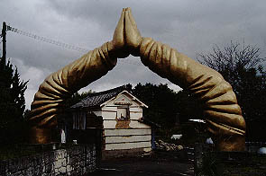
後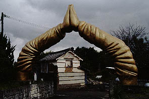
恐らく日本で唯一、っていうか多分世界でも唯一の合掌門である。
大きさは普通車がゆうゆう通過出来るサイズ。しかも袖のシワとか関節の曲がり具合とか妙〜に不自然な感じがたまらない。
チョット梅図かずおチックというか。
この素晴らしすぎるゲートは大分県の狭間町の市街地から東洋のチロルとも称される由布川峡谷を目指す途中の道沿いにある。
あ、近くには最近落慶された様子の物凄く金のかかった大伽藍を擁する立派な寺があるが、そこと間違えないように。
寺の名前は善徳院。入口の門からしてコレですから中は推して知るべし。
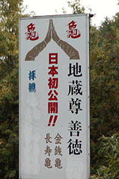
入口に立つ看板には何故か善徳院の「院」の字が消されていたのだが善徳だけじゃ何だか判らないのでここでは善徳院と呼ばせていただく。
ついでに拝観料の部分も消されているが・・・つまり、その、お客が全然・・・ま、いっか。
もしかしたらその内,善徳公園とかになっているかもしれないが、その時はそれでヨロシク。
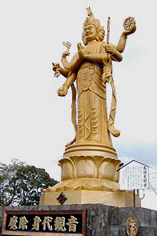
で、合掌ゲートを潜ると早速10メートルはあろうかという金の馬頭観音がお出迎え。モノはFRPだと思います。
で、境内を眺めてみると・・・
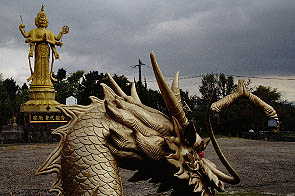 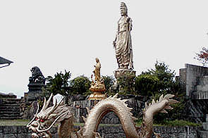
悪・・・じゃなくて夢のような光景が
金色の像がところ狭しと林立している。金の合掌門、金の龍、金の観音、その他数え切れない程の金の仏像やら仁王像やら・・・もう、致死量ギリギリの珍寺である。
境内には所々工事中の部分があり、未完成の寺であることがうかがえる。ちなみにお寺には誰もいませんでした。
奥の方には20メートルはあろうかという金ピカの大観音が立っている。
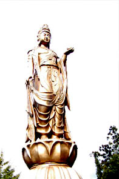
白く飛んでしまって恐縮だがこちらがこの寺のキング、明星大観音である。
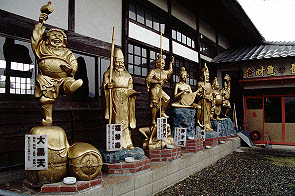 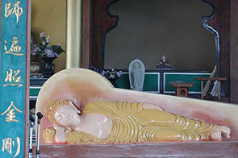
本堂の脇にはやけに楽しそうな七福神。本堂の中には寝釈迦さんがヒマそうに昼寝をしてました。
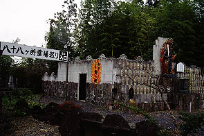
明星大観音の脇には八十八ケ所霊場巡りという看板が不動妙王のうらのブロック造の建物の中は水垢離場っぽい感じでした。
で、看板を過ぎると・・・
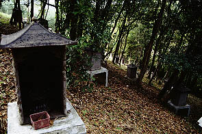 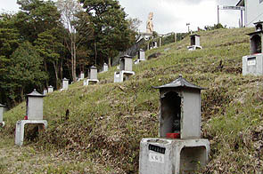
裏山の斜面に無数の（っていうか88個の）祠が点在しており、それぞれに四国八十八ケ所の写し本尊が安置されている。
祠にはそれぞれ賽銭用のプラのかごが置かれているが入っているのは落ち葉ばかり。
どう考えても一般の参拝客なぞ来そうもないロケーションだが、ここが完成することはあるのだろうか。
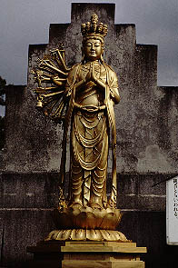
十一面観音も修行中。まだ手が全部生え揃っていません。
あ、そういえば金銭亀と長寿亀見てなかった。何処にいたんだろう？？？（こんなんばっかでスミマセン）